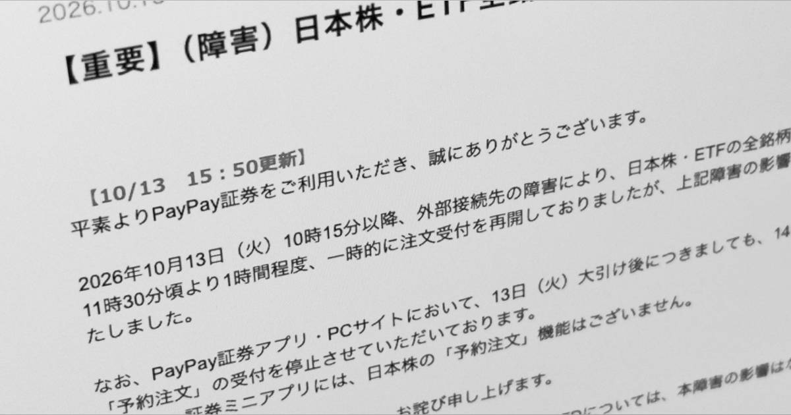
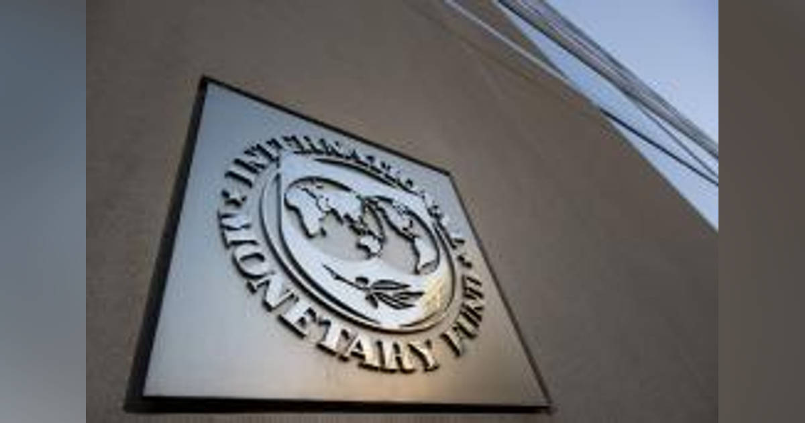

01【保存版】サイバー攻撃で情報漏洩「個人ができる対策」7選
発行日時：2026年10月13日 05:30 JST
あなたに関係ありそうな理由
家族のオンライン手続きと事業のウェブサービスの両方で、情報を守る日常の優先順位を具体化できるためです。
概要
記事は、情報漏えいを特別な企業だけの問題ではなく、日々使うメール、通販、金融、行政手続きにも及ぶ前提で捉え、個人が取れる七つの対策を整理する。記事が引用するクラウドストライクの報告では、AIを使う攻撃は前年から89％増え、侵入後に別の端末やデータへ広がるまでの平均時間は29分、最速では27秒だった。攻撃が速くなっているからこそ、被害に遭ってから考えるより、普段から入口を減らす必要がある。表示コメントでも、最近は正規サイトが改ざんされて誘導に使われる例が増えたという指摘があり、見知らぬメールだけを警戒して終わりにはできない。
対策の一つ目は、OS、ブラウザー、アプリを後回しにせず更新することだ。更新は新機能のためだけでなく、既知の弱点をふさぐ作業でもある。二つ目は、広告や検索結果からではなく、公式アプリ、登録済みのブックマーク、正しいURLからサービスへ入る習慣をつくること。偽サイトは見た目が似ていても、入口を固定すれば見分ける場面を減らせる。三つ目は、長いパスフレーズを使い、同じ文字列を複数の重要サービスで使い回さないことだ。記事は15文字以上を目安にし、意味のある複数語を組み合わせる方法を勧めている。
アカウントは一律に扱わない。金融、仕事、個人情報を多く預けるサービスにはパスキーや多要素認証を優先し、比較的影響の小さいサービスは別の認証情報で分ける。カード明細を毎月確認し、身に覚えのない請求を早く見つけることも対策に含まれる。怪しい連絡を受けた時は、メールやSMS内のリンクから急いで操作せず、公式窓口から状況を確かめる。万一漏えいが分かった場合には、漏れた情報の種類に応じてパスワード変更、カード会社への連絡、信用情報の確認を行う。全部を完璧に守るより、被害が大きい順に準備する発想が大切になる。
記事は企業の側にも視線を向ける。守るべきシステムを増やし続けるのではなく、利用価値の低いオンラインサービスを止め、管理対象を減らす判断が必要だという。表示コメントでも、低い価値の業務を残したまま防御だけを積み増すより、やめる基準を経営が決めるべきだという論点が出た。個人の対策と組織の対策は別物に見えて、入口を減らす、更新を滞らせない、異常に早く気づくという構造は共通する。便利さのために増やしたアカウントやサービスを棚卸しし、誰がどこを守るかを決め直す材料として読みたい。
仕事や会話で使える一言
「守る対象を増やすより、止められるサービスと更新の優先順位を先に決めたいですね。」
NewsPicks原文を読む
02【解説】「AI部下」と働く時代。リスクに備えた組織を作れ
発行日時：2026年10月13日 05:30 JST
あなたに関係ありそうな理由
AIを業務に取り入れる際、便利さだけでなく、責任者・ログ・止める条件を実務に落とし込む必要があるためです。
概要
記事は、AIエージェントが単なる補助ツールから、仕事を受け持つ「部下」や部署のような存在に近づく中で、組織が何を準備すべきかを法務と経営の観点から解説する。まず確認すべきなのは、AIが作った判断や行動の法的責任がAI自身に移るわけではないことだ。最終的には導入した会社や人が説明を求められる。便利だから任せた、サービスの仕様だった、では済まない。表示コメントでも、AIに任せる範囲より、どの条件で止め、誰が最終確認するかを先に読める形で決めるべきだという意見があり、記録を大量に残すだけでは不十分だとされる。
業務でAIに個人情報や営業秘密を入力する時は、契約、第三者提供、国外移転の問題が重なる。法人向けサービスには入力内容を学習に使わない条件があっても、セキュリティ目的で一定期間プロンプトを保存するものがある。記事は「法人契約だから安全」と一括りにせず、利用規約、保存期間、学習利用、委託先、変更通知を確認するよう促す。禁止だけを強くすると、現場が承認されていない個人向けAIを使うシャドーAIが広がりやすい。安全な利用経路を用意し、サービスや契約の変更を定期的に見直すことが、実際には情報統制を強める。
特定の海外事業者に業務が深く依存することも、事業継続と経済安全保障の課題になる。サービス停止、仕様変更、海外規制の影響を受ける場合に、どこまで代替できるかを考えておく必要がある。さらに、AIの判断過程が見えにくいと、従来の「現場、管理部門、監査」の三線防衛だけでは監督が機能しにくい。問題が起きた時に、担当者一人へ判断と監視が集中する構造も危うい。記事は、現場任せにせず、経営陣や取締役会がAIの導入方針と統制に直接関わる必要を示す。
実務上の出発点は、AIが何を参照し、何を出力し、誰に影響するかを業務ごとに書き出すことだ。その上で、AIの判断・操作ログ、目標を測る指標、人が介入する境界、異常時の停止手順を整える。表示コメントには、導入の成否は個別のツール選びより、組織の文脈やデータの意味づけ、運用設計を変えられるかにあるという指摘もあった。今後は、AIを使っているかではなく、重要な決定で誰が責任を持ち、記録を読めて、必要なら止められるかを見ることが重要になる。
仕事や会話で使える一言
「AIに任せる範囲より先に、止める条件と最終確認者を決めておきたいですね。」
NewsPicks原文を読む
03【消費税減税】高市首相、またも「問題発言」で日本中が暗い
発行日時：2026年10月13日 05:30 JST
あなたに関係ありそうな理由
税率変更が、飲食店、農家、テナント、家計の値付け・資金繰り・事務負担へどう波及するかを分けて考える必要があるためです。
概要
記事は、政府が検討する食料品の消費税率引下げをめぐり、制度の複雑さと現場への影響を論じる。記事によると、2027年4月から2年間、飲食料品の税率を1％にする案が示される一方、外食は10％のままとされる。1％分の税収を使った給付によって実質的な負担をゼロにする構想もあり、年間約6,000億円とする見積もりが紹介される。ただし、対象者、給付額、実施方法の詳細はまだ見えない。税率が下がるという見出しだけでは、店頭価格、事業者の納税、財源がどう変わるかは判断できないというのが記事の出発点だ。
記事が問題にする一つは、減税がそのまま価格低下につながるとは限らないことだ。小売店や飲食店には、仕入れ、賃料、人件費、光熱費など複数のコストがあり、国が価格への反映を求めても一律の対応は難しい。特に食料品を売る免税事業者や小規模農家では、販売時の税率が下がる一方で、仕入れにかかる10％の税を控除・還付できない場合がある。課税事業者へ移れば事務負担も変わる。記事では農家向けに売上の5％を給付する案も触れられるが、制度ごとの影響は立場で大きく異なる。
もう一つは財源だ。記事は、食料品の減税による年4兆3,000億円規模の税収減と給付の費用を、何で補うのかが具体化していないと指摘する。国債発行や予算編成にどう表れるかは、今後の議論を待つ必要がある。記事のタイトルや首相発言の評価には、表示コメントからも異論が出ていた。一方では税制が複雑になり、現場の価格設定や納税実務を混乱させるという懸念、他方では政府案の詳細を待って判断すべきだという意見があり、記事の論調と事実関係を分けて読む必要がある。
実際の仕事では、税率だけを見て結論を急がないことが大切になる。外食と持ち帰りの区分、仕入れの税率、インボイス登録の有無、還付の可否、顧客への価格表示、資金繰りを順に確認したい。賃貸やテナント運営でも、入居者や取引先がどの業態で、税率差や消費動向の影響を受けるかは別々だ。今後は、法案の具体的な制度設計、対象範囲、農家・外食への支援、国債発行額と予算の説明を追うことで、賛否の言葉より実務への影響を具体的に見極めたい。
仕事や会話で使える一言
「税率だけで判断せず、仕入れ・還付・値付け・財源を分けて確認したいですね。」
NewsPicks原文を読む
04PayPay証券、障害で日本株・ETFが売買できず 14日の予約注文も受付止まる 復旧めど立たず
発行日時：2026年10月13日 18:53 JST

あなたに関係ありそうな理由
顧客が時間制約のある手続きを行うサービスでは、障害そのものに加え、代替手段・通知・補償説明の設計が問われるためです。
概要
記事は、PayPay証券で日本株とETFの売買ができなくなり、翌14日分の予約注文の受け付けも止まった障害を伝える。障害は13日10時15分ごろに始まり、同社はいったん11時30分ごろに受け付けを再開したものの、約1時間後に再び停止した。取引時間中の障害は、利用者にとって単に画面が使いにくいという問題ではない。値動きの中で売却や購入を決めたい時に注文を出せず、損切りや利益確定の機会を失う可能性がある。復旧時刻が見通せない状況では、利用者が何を判断すればよいかも分からなくなる。
記事によると、原因は外部接続先で起きた問題とされ、日本株・ETFが対象だった。米国株・ETF、投資信託、日本株CFD、10倍CFDは通常どおり利用できた。テレビ朝日の報道として、不正アクセスによるものではないとの説明も紹介されている。ただし、原因が何であれ、利用者の目には「今できる取引」と「できない取引」が混在する。対象範囲、発生時刻、復旧見込み、予約注文への影響を、遅れなく一貫した言葉で示せるかが重要になる。障害情報の更新が少ないほど、利用者は別の情報源や憶測に頼らざるを得なくなる。
表示コメントでは、証券会社のシステム停止は取引機会に直結する重大な事象であり、個人投資家も代替経路を考える必要があるという論点が出た。記事では同日に、機関投資家向けの日本株取引でも停止が生じたとする報道に触れる。大口の利用者は複数の証券会社や保管先を使える場合があっても、個人にはそうした選択肢が少ないことがある。だから、サービス側がどの顧客にどんな代替手段を用意し、どんな場合に補償を検討するかを事前に説明しているかが、平時の信頼にも関わる。
このニュースは証券に限らず、決済、予約、入退去、問い合わせなど、止まると後から取り戻しにくい業務を考える材料になる。障害を完全になくすことは難しいが、主要機能の優先順位、別の受付方法、担当者の連絡先、利用者向けの状況ページを前もって決めることはできる。復旧後に原因だけを公表するのではなく、どの注文が受け付けられたか、利用者が次に何を確認すべきかまで案内する必要がある。今後は、同社が原因、復旧、影響を受けた注文への対応をどう説明するかを追いたい。
仕事や会話で使える一言
「止められない業務は、障害そのものより代替手段と状況通知を先に設計したいですね。」
NewsPicks原文を読む
05２６年世界成長率３・１％ ＩＭＦ予測、経済二極化に警鐘
発行日時：2026年10月13日 11:04 JST

あなたに関係ありそうな理由
世界の成長率を見る時に、AI投資の追い風とエネルギー・物価の負担が、誰にどう分かれているかを見落とさないためです。
概要
記事は、国際通貨基金（IMF）が2026年の世界実質成長率を3.1％と見込み、7月時点の予測から0.1ポイント上方修正したことを伝える。AI関連の投資が成長を支える一方、その恩恵と高いエネルギー価格の負担が国や地域で偏る「二極化」への警鐘が中心にある。世界全体の数字がわずかに改善しても、すべての国が同じように上向くわけではない。記事によると、32の国・地域だけで世界成長の95％を占め、約半数では見通しが下方修正された。成長率を一つの平均値として受け取る危うさがここにある。
AIへの投資は、データセンター、半導体、ソフトウェア、関連する設備投資を通じて需要を作る。しかし記事は、AIによる生産性向上への期待が下がれば、投資が縮小する可能性にも触れる。地政学的な対立やエネルギー価格の上昇が再びインフレを押し上げることもリスクだ。表示コメントでは、AI投資の恩恵を受ける企業・国がある一方で、物価上昇の影響は家計に重く出るという整理があった。AI投資がGDPを一時的に押し上げるだけなのか、持続的な生産性向上へつながるのかを分けて見る必要がある。
記事は2027年の世界成長率を3.4％とし、従来予測を据え置く。日本は2026年が0.7％で0.1ポイント上方修正され、財政支援がエネルギー価格上昇の影響を一部打ち消すとされた。2027年は0.7％のまま。米国は2026年、2027年とも2.3％で、後者は0.1ポイントの上方修正となった。こうした見通しは、輸出、金利、投資、為替を考える基礎になるが、予測値そのものが確定した結果ではない。特にエネルギー価格と金融市場の変化は、短期間で家計や企業のコストを動かしうる。
不動産や事業の計画でも、世界経済が何％成長するかだけでは判断材料が足りない。顧客の購買力、取引先の資金調達、電気・燃料などのコスト、AI投資が集中する地域や業種の需要を別々に見る必要がある。表示コメントには、国同士だけでなく、一つの国の内部でも恩恵と負担が分かれるという見方があった。今後は、IMFの数字が上方か下方かより、AI投資が実際の生産性や雇用にどう表れ、物価・エネルギー・金利の変化が誰に及ぶのかを追うことが重要になる。
仕事や会話で使える一言
「成長率を見る時は、誰が利益を得て誰がコストを負うかを分けて見たいですね。」
NewsPicks原文を読む